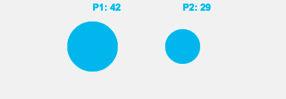

{{GamesSidebar}}
This article is for Touch Event Horizon and A Game Related To It

touchstart, touchend
touchmove
This tutorial shows how to use Touch Events to create a game on a <canvas>. This is a multi-player game relying on the Tap and Drag gestures.